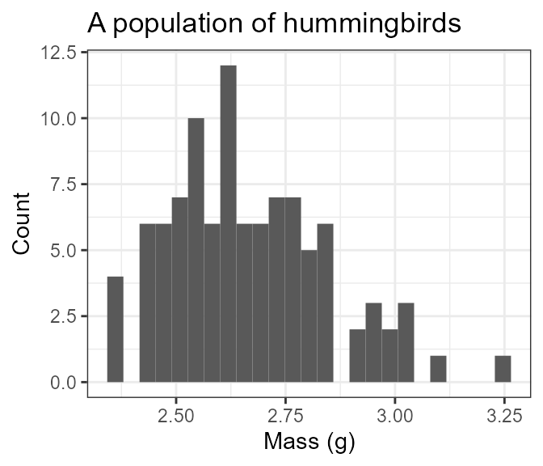
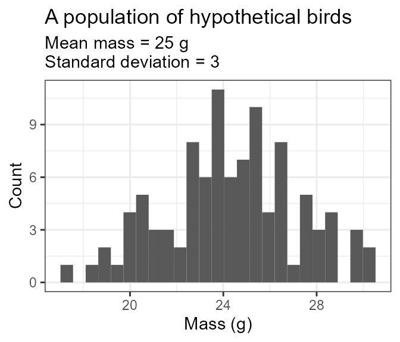
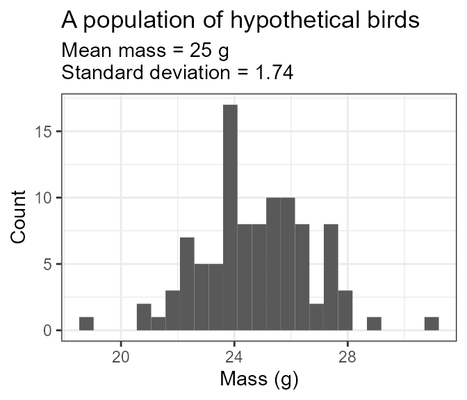

The core functionality of birdsize is to simulate
individual body mass measurements for birds given either their species
ID or a mean (and possibly standard deviation) of body mass.
pop_generate achieves this for a single species.
For most birds in the North American Breeding Bird Survey, you can use the species’ code (AOU) to simulate a population directly. For the hummingbird Selasphorus calliope:
a_hundred_hummingbirds <- pop_generate(abundance = 100, AOU = 4360)
head(a_hundred_hummingbirds)
#> AOU sim_species_id individual_mass individual_bmr mean_size sd_size
#> 1 4360 4360 2.556873 20.50623 2.65 0.1818394
#> 2 4360 4360 3.101904 23.53533 2.65 0.1818394
#> 3 4360 4360 2.833263 22.06327 2.65 0.1818394
#> 4 4360 4360 2.703245 21.33652 2.65 0.1818394
#> 5 4360 4360 2.612003 20.82052 2.65 0.1818394
#> 6 4360 4360 2.987874 22.91515 2.65 0.1818394
#> abundance sd_method scientific_name
#> 1 100 AOU lookup Selasphorus calliope
#> 2 100 AOU lookup Selasphorus calliope
#> 3 100 AOU lookup Selasphorus calliope
#> 4 100 AOU lookup Selasphorus calliope
#> 5 100 AOU lookup Selasphorus calliope
#> 6 100 AOU lookup Selasphorus calliope
ggplot(a_hundred_hummingbirds, aes(individual_mass)) +
geom_histogram(bins = 25) +
xlab("Mass (g)") +
ylab("Count") +
ggtitle("A population of hummingbirds") 
To look up the AOU based on the species’ scientific name, explore the
list
maintained by the USGS, or the included sd_table
dataset:
sd_table |>
head()
#> AOU genus species mean_mass mean_sd contains_estimates
#> 51 2881 Perdix perdix 405.5000 31.00000 FALSE
#> 49 2882 Alectoris chukar 503.5000 36.01519 TRUE
#> 38 2890 Colinus virginianus 172.0000 12.19872 TRUE
#> 37 2920 Oreortyx pictus 233.0000 16.56469 TRUE
#> 40 2930 Callipepla squamata 184.0000 13.05678 TRUE
#> 42 2940 Callipepla californica 166.3333 14.29942 TRUE
#> scientific_name
#> 51 Perdix perdix
#> 49 Alectoris chukar
#> 38 Colinus virginianus
#> 37 Oreortyx pictus
#> 40 Callipepla squamata
#> 42 Callipepla californicaAlternatively, you can simulate body masses for a population by
supplying the body size parameters yourself. This may be useful if you
would like to work with a species not included in the
sd_table, test sensitivities to different parameter ranges,
or generate values for simulation/null models (or, other
applications!).
Note that, if both mean mass and a species code are provided, the species code will be used and the mean mass provided will be ignored!
a_hundred_hypotheticals <- pop_generate(abundance = 100, mean_size = 25, sd_size = 3)
head(a_hundred_hypotheticals)
#> AOU sim_species_id individual_mass individual_bmr mean_size sd_size abundance
#> 1 NA 1 19.86281 88.44888 25 3 100
#> 2 NA 1 22.60234 96.98414 25 3 100
#> 3 NA 1 20.76744 91.30263 25 3 100
#> 4 NA 1 26.59827 108.92055 25 3 100
#> 5 NA 1 23.80690 100.64180 25 3 100
#> 6 NA 1 24.14694 101.66465 25 3 100
#> sd_method scientific_name
#> 1 Mean and SD provided <NA>
#> 2 Mean and SD provided <NA>
#> 3 Mean and SD provided <NA>
#> 4 Mean and SD provided <NA>
#> 5 Mean and SD provided <NA>
#> 6 Mean and SD provided <NA>
ggplot(a_hundred_hypotheticals, aes(individual_mass)) +
geom_histogram(bins = 25) +
xlab("Mass (g)") +
ylab("Count") +
ggtitle("A population of hypothetical birds", subtitle ="Mean mass = 25 g\nStandard deviation = 3") 
If the mean mass is not known or not provided,
simulate_population will estimate the standard deviation
based on scaling between the mean and standard deviation of body
mass:
another_hundred_hypotheticals <- pop_generate(abundance = 100, mean_size = 25)
head(another_hundred_hypotheticals)
#> AOU sim_species_id individual_mass individual_bmr mean_size sd_size
#> 1 NA 1 26.24416 107.88463 25 1.746196
#> 2 NA 1 21.44791 93.42580 25 1.746196
#> 3 NA 1 20.79538 91.39020 25 1.746196
#> 4 NA 1 23.75958 100.49914 25 1.746196
#> 5 NA 1 22.17191 95.66364 25 1.746196
#> 6 NA 1 22.58620 96.93474 25 1.746196
#> abundance sd_method scientific_name
#> 1 100 SD estimated from mean <NA>
#> 2 100 SD estimated from mean <NA>
#> 3 100 SD estimated from mean <NA>
#> 4 100 SD estimated from mean <NA>
#> 5 100 SD estimated from mean <NA>
#> 6 100 SD estimated from mean <NA>
ggplot(another_hundred_hypotheticals, aes(individual_mass)) +
geom_histogram(bins = 25) +
xlab("Mass (g)") +
ylab("Count") +
ggtitle("A population of hypothetical birds", subtitle ="Mean mass = 25 g\nStandard deviation = 1.74") 